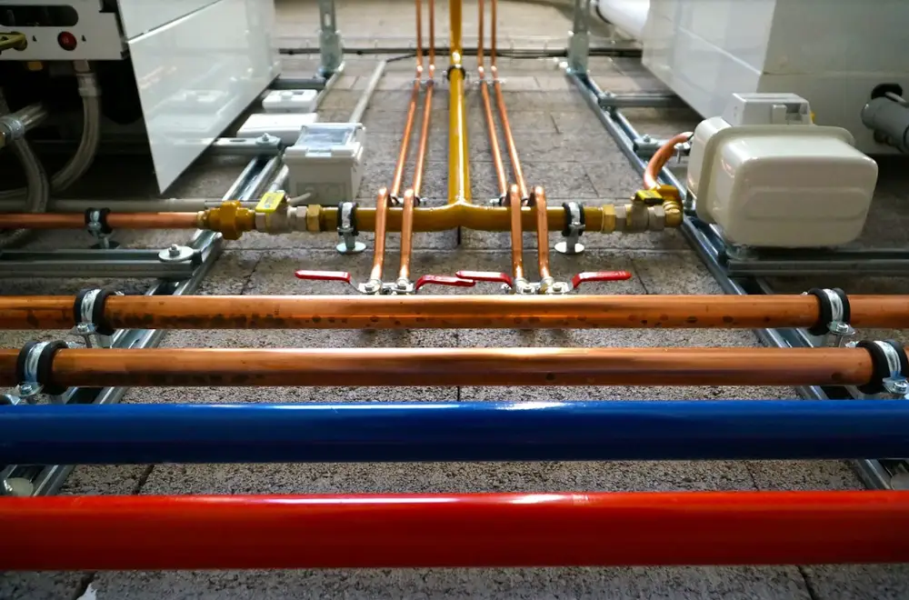

October 7, 2019
The holidays are almost upon us here at Goff Heating & Air Conditioning, and while we can’t wait for turkey feasts and time with family, we’re also getting our tools ready to make sure your get-togethers are a holiday hit.
Want to find out more? Then keep reading below to find out how we can help make your home a cozy paradise this holiday season.
Improves Your Air Quality
Between all the different holiday parties your family may be hosting, you can be sure your home is going to be packed this winter and you want to ensure your guests are going to have a good time. Dirty air ducts and furnaces can lead to lower air quality in your home and can give your home a sense of stuffiness, a foul smell, or may leave your guests coughing and sneezing.
Our technicians will seal off every exit in your HVAC system and run our high-powered vacuum all the way through to remove any dirt or dust and to give your home a breath of fresh air.
Keeps Your Pipes from Bursting
Depending on where you live, the winter season can present your home with unbearably cold temperatures which can pose serious risks to your plumbing. Standing water in any of your pipes, especially those outside your home, can freeze and burst in your basement or your yard.
The last thing you need this holiday season is a frigid and flooded basement, and our staff will make sure your systems are drained, your faucets are sealed, and may even recommend the benefits of smart plumbing systems.
Can Lower Your Heating and Water Bills
According to the Department of Energy, nearly half of all energy consumed in the United States is used for home heating and cooling, which can mean extravagant heating bills this winter if your furnace isn’t working at peak efficiency.
Dust and dirt naturally build up in your furnace systems over the course of the year, and that can limit the warm air it creates and force you to turn the dial even higher. Our staff can give your furnace the boost it needs by cleaning out your air ducts, giving your furnace a tune-up, and show you which doorways can be better sealed.
Whether you’re looking to throw an amazing holiday party or just want to enjoy the winter season comfortably, cleaning out your HVAC systems is the first step you need. Give our technicians a call today at 903-838-6923 or visit us online and see how we can help you breathe a little easier this winter.